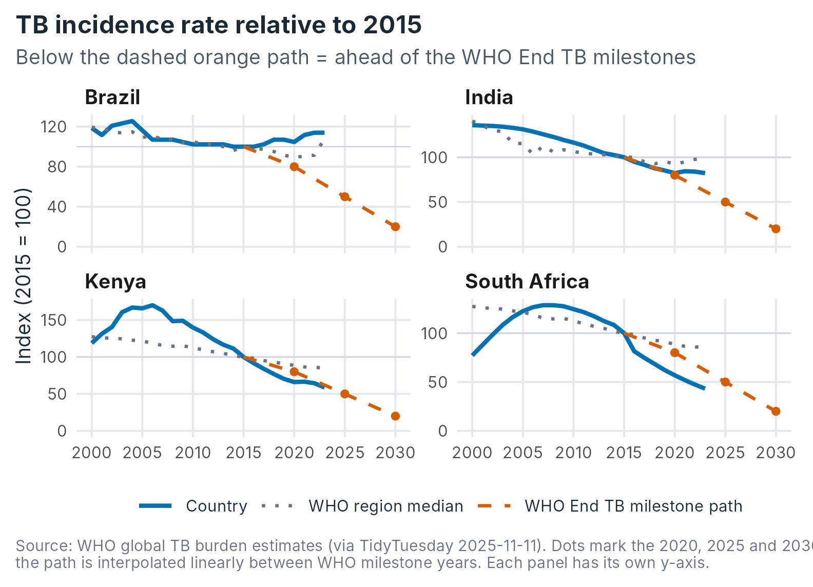
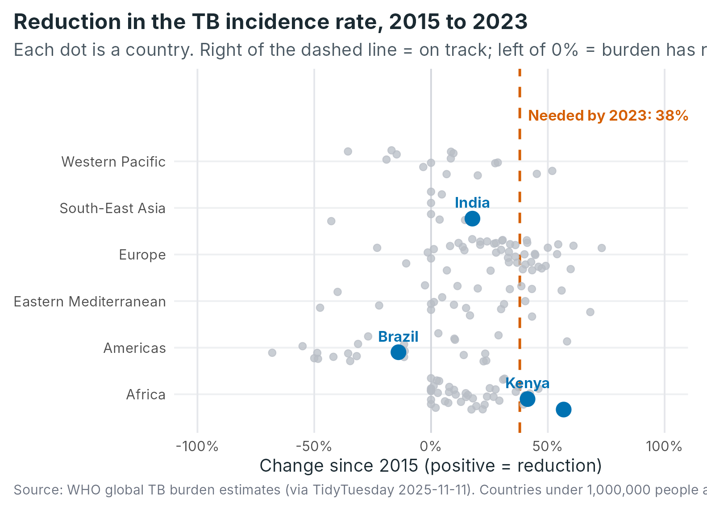

Who this is for, and the question it answers
tbprogress is for a public-health analyst or
policy student who needs to judge how a country’s tuberculosis
(TB) burden is trending. It is built around one question:
Is a country’s TB burden falling fast enough to meet the WHO End TB milestones, and how does it compare with its region?
The WHO End TB Strategy asks every country to cut the TB incidence rate and the number of TB deaths by set percentages compared with 2015. The package bundles WHO’s estimates for 215 countries (2000-2023), turns the milestones into a yearly “path”, and provides a Shiny app to explore where each country stands.
1. Install the package
Install from GitHub with the remotes package. You need R
4.1 or newer.
# install.packages("remotes")
remotes::install_github("ETC5523-2026/etc5523-assignment-4-avat0006-ai")2. Launch the app
The app opens in your web browser. It reads only the data inside the
installed package, so there is nothing else to download. To stop it,
press the stop button in RStudio or press Esc /
Ctrl + C in the R console.
3. Use the app
The sidebar has five controls. They all feed the same question:
| Control | What it does | When to change it |
|---|---|---|
| 1. Indicator | Chooses the burden to track: incidence rate (new cases per 100,000 people) or TB deaths (number per year). | To check the incidence milestone and the deaths milestone separately; a country can be on track for one but not the other. |
| 2. Countries | Up to five countries, searchable and grouped by WHO region. | To compare countries you care about. |
| 3. Assess progress in year | The year the status table and peer chart judge against 2015. | To ask “was this country ever on track?” by moving back in time. |
| 4. Compare with the WHO region median | Adds the typical country in the same WHO region as a dotted line. | To see whether a country is doing better or worse than its neighbours. |
| 5. Hide countries under 1 million people (Peers tab only) | Removes tiny populations whose percentages swing wildly. | Leave on for a readable chart; switch off to see everyone. |
A suggested route through the app:
- Start on the Progress tab with the default countries and the incidence indicator. Read the headline strip first: how many are on track?
- Look at the trajectory chart to see why. Is a country’s line below the dashed orange path (ahead) or above it (behind)?
- Check the status table for exact numbers.
- Switch to Peers to see whether the country is unusual for its region.
- Change the indicator to TB deaths and repeat. The answer is often different.
The Guide tab inside the app repeats this information, so you never have to leave it.
4. Interpret the outputs
The rest of this vignette reproduces the app’s outputs with the package functions, so you can see exactly what they show. We use four countries with contrasting stories.
countries <- c("Kenya", "South Africa", "India", "Brazil")The status table
tb_progress_summary() compares each country’s reduction
since 2015 with the reduction the WHO milestone path requires by the
assessment year.
inc <- tb_progress_summary(indicator = "incidence", assess_year = 2023,
countries = countries)
knitr::kable(
data.frame(
Country = inc$country,
`2015 rate` = inc$baseline_value,
`2023 rate` = inc$current_value,
`Reduction (%)` = round(inc$reduction_pct, 1),
`Needed (%)` = round(inc$required_reduction_pct, 1),
`Gap (pct. points)` = round(inc$gap_pp, 1),
Status = as.character(inc$status),
check.names = FALSE
)
)| Country | 2015 rate | 2023 rate | Reduction (%) | Needed (%) | Gap (pct. points) | Status |
|---|---|---|---|---|---|---|
| Brazil | 43 | 49 | -14.0 | 38 | -52.0 | Rising |
| India | 237 | 195 | 17.7 | 38 | -20.3 | Behind |
| Kenya | 380 | 223 | 41.3 | 38 | 3.3 | On track |
| South Africa | 988 | 427 | 56.8 | 38 | 18.8 | On track |
How to read each column:
- Reduction is how much the incidence rate has fallen since 2015. A negative value means it has risen.
-
Needed is the reduction the WHO milestone path
requires by 2023. WHO sets milestones only for 2020, 2025, 2030 and
2035, so the path between them is a straight line
(
tb_required_reduction(2023, "incidence")is 38%). - Gap is reduction minus needed. Positive means ahead of the path.
- Status is On track when the reduction is at least what is needed, Behind when the burden is falling but too slowly, Rising when it is higher than in 2015, and No data when WHO has no usable 2015 baseline.
In this example, 2 of the 4 countries are on track for the incidence milestone, and the largest reduction is in South Africa (56.8%).
The trajectory chart
plot_tb_trajectory(indicator = "incidence", countries = countries)
Each panel rescales one country so that 2015 = 100, which lets countries with very different rates sit on one footing.
- The solid blue line is the country. Where it ends below the dashed orange line, the country is ahead of the milestones.
- The dashed orange line is the WHO milestone path (dots mark 2020, 2025 and 2030). It continues to 2030 so you can see how far there is still to go.
- The dotted grey line is the median country in the same WHO region.
This links straight back to the question: a country can only meet the End TB milestones if its blue line follows the orange path down. A line that is flat or rising is on course to miss them.
The peer chart
plot_tb_peers(indicator = "incidence", assess_year = 2023, highlight = countries)
Each dot is a country, grouped by WHO region, and its horizontal position is the reduction since 2015. The dashed orange line is the reduction needed by 2023, so dots to its right are on track. Your highlighted countries are labelled in blue. Use this chart to judge whether a country is typical of its region or an outlier: a country that is on track in a region where almost nobody is stands out.
Repeat for deaths
The deaths milestone is stricter than the incidence milestone for the same year, and the picture often changes:
dea <- tb_progress_summary(indicator = "mortality", assess_year = 2023,
countries = countries)
knitr::kable(
data.frame(
Country = dea$country,
`Reduction (%)` = round(dea$reduction_pct, 1),
`Needed (%)` = round(dea$required_reduction_pct, 1),
Status = as.character(dea$status),
check.names = FALSE
)
)| Country | Reduction (%) | Needed (%) | Status |
|---|---|---|---|
| Brazil | -80.6 | 59 | Rising |
| India | 24.2 | 59 | Behind |
| Kenya | 59.6 | 59 | On track |
| South Africa | 15.2 | 59 | Behind |
5. Caveats
- The numbers are modelled WHO estimates. The uncertainty intervals are not in this dataset, so treat a gap of a few percentage points as “about on the path” rather than a firm verdict.
- A percentage change from a zero baseline is undefined, so such countries (and countries with no WHO estimate, such as North Korea for deaths) show as No data.
- Very small populations produce volatile percentages, which is why the peer chart hides countries under one million people by default.
- The region median gives every country equal weight, regardless of population.
6. Using the functions without the app
Everything in the app is available programmatically:
# All countries, deaths, 2023
all_dea <- tb_progress_summary(indicator = "mortality", assess_year = 2023)
table(all_dea$status)
#>
#> On track Behind Rising No data
#> 18 116 67 14
# The yearly index behind the trajectory chart
head(tb_index(indicator = "incidence", countries = "Kenya"), 3)
#> # A tibble: 3 × 8
#> country iso3 who_region year value baseline_value index pct_change
#> <chr> <chr> <chr> <int> <dbl> <dbl> <dbl> <dbl>
#> 1 Kenya KEN Africa 2000 451 380 119. 18.7
#> 2 Kenya KEN Africa 2001 499 380 131. 31.3
#> 3 Kenya KEN Africa 2002 534 380 141. 40.5See the function reference for
details, and ?tb_burden for a description of every variable
and the data’s source and terms of use.